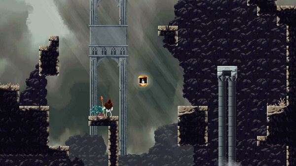

|  | Bones WhisperDeveloper : Benjamin Westlake aka (I_Fish) |
||
about gameBones Whisper is a fast flow focused platformer where you explore a hidden city of bones and discover the stories and woes of the inhabitants of this shrouded world. Movement and levels are fine tuned to allow for advanced movement options while traversing the games many area's. Inspirationsthe game is inspired from some of my favorite games HollowKnight and The Messenger. it is obvious the inspirations effects of the game with the lanterns and bouncing attacks for traversal and a bleak gothic setting. Bones Whisper does differ in one important way it is soley designed for movement in mind with more weighty momentuem based movement, and the lack of combat. developmentThis is a passion project and is made in my free time without any finacial insentive in mind hence the slow developement. I plan to turn this game into a semi lengthy full game. |
|||